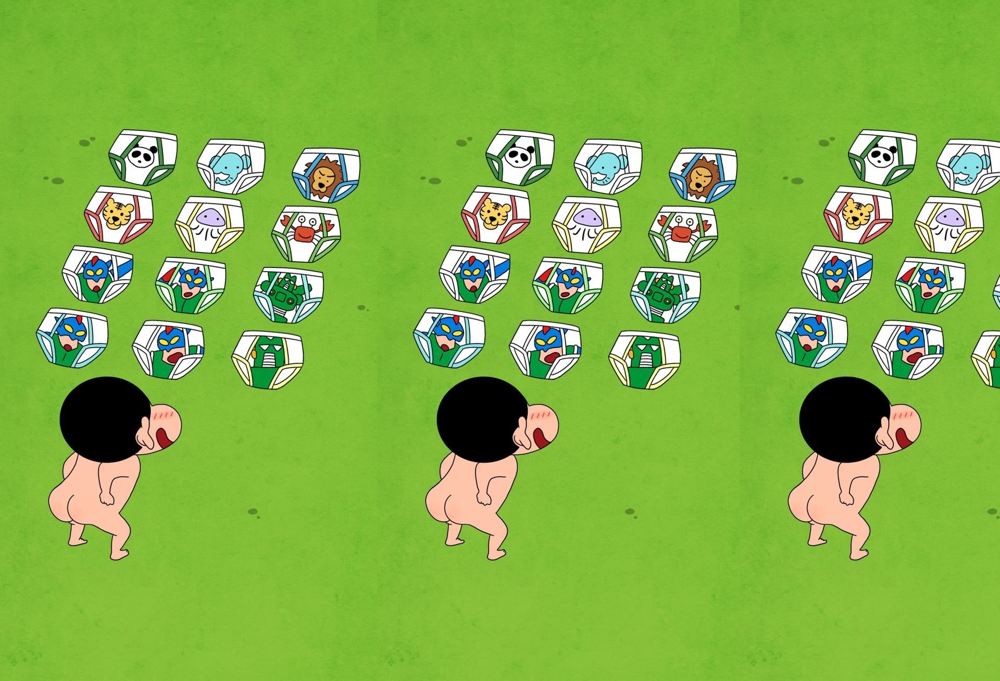

-> head태그 없어도 이부분은 꼭 작성한다.
-> 한글 깨짐 방지
p태그는 paragraph의 약자로 문단을 나타낸다.
p태그는 br태그가 없어도 자동으로 줄이 바뀐다.
앞뒤 줄 사이에 여백을 만든다.
한줄 전체를 차지한다.(bolck 요소 : 가로크기와 세로크기를 지정할 수 있다.)
태그 이름은 대소문자 구분이 없지만 소문자로 작성한다.-> br태그가 필요없음.p태그 때문에 자동으로 줄바뀜.
Hello~~ HTML!!!
style를 이용해서 문서를 꾸며줘여
span사이에 앞뒤 여백을 주기 위해서 style에 margin값을 부여한다.
무궁화꽃이 피었습니다.
수국꽃이 만발하였습니다.
span태그는 자동으로 줄이 바뀌지 않기 때문에 br태그로 줄을 바꾼다.
지정한 부분만 style이 적용된다. (inline요소 : 가로크기와 세로크기,여백(margin)을 지정할 수 없다.)
단,스타일에 display : inline-block; 을 설정하면 가로,세로,여백을 지정할 수 있다.

img태그는 이미지를 나타내는 태그이다.(인라인 요소이지만, 이미지 크기를 정하는 것이기 때문에 가로,세로 가능)
필수 속성으로 src="이미지이름" 나와야 한다. '이름=값'으로 표현한다.
src에 표시하고자 하는 이미지 이름을 설정한다.
이미지의 크기를 설정할 수 있다.
a태그는 페이지이동을 실행하는 태그이다.(인라인 요소이다.)
필수 속성으로는 href="페이지이름"
네이버로 갈랭??